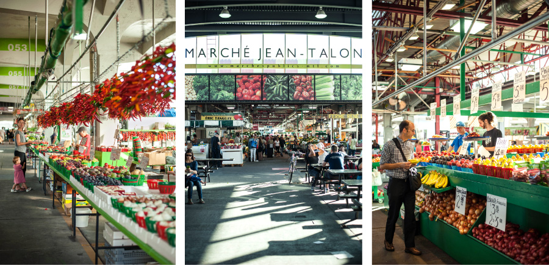
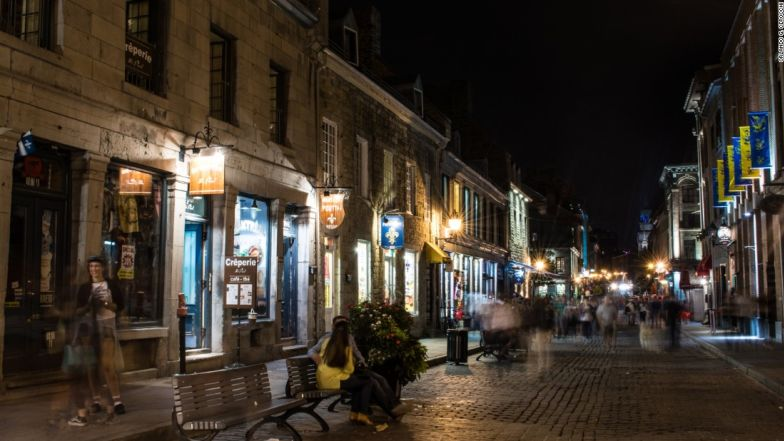

| |
| |
|
Downtown Montréal contains exquisite:
Museums, and Religious buildings.
Families can enjoy the beautiful McCord museum which has thousands of daily tourists.
The Mary, Queen of the World Cathedral in downtown is the 3rd largest church in Quebec Canada.
|
| |
|  |
|
Jean-Talon Market is in the heart of Little Italy.
In the 1950's Jean-Talon Market was dominated by Italians; hence the name Little Italy that arose from that point on.
Many tourists go to Little Italy to explore the Italian influence around the area, and enjoy the fresh gourmet food the Jean-Talon Market has to offer.
|
| |
|  |
|
Old Montréal is one of the oldest venues in the city.
Founded almost 400 years ago by Mr. Champlain.
It currently is a strip of: cafes, restaurants, bars, and shops, where tourists can indulge.
|